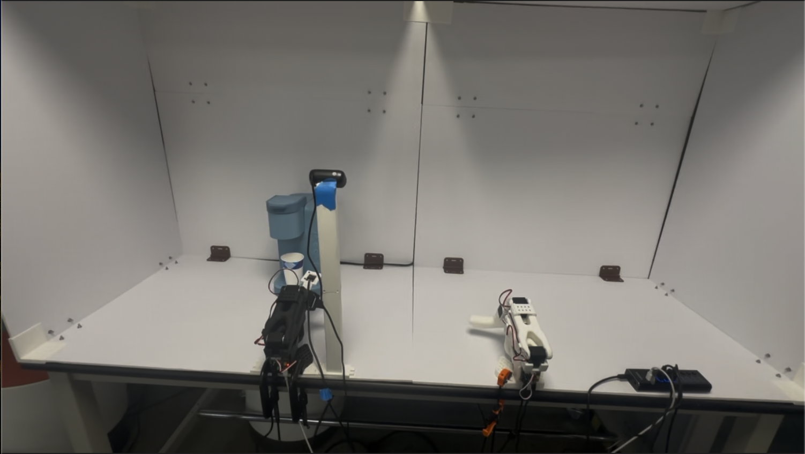

This project tackles long horizon robotic manipulation for making coffee as part of Triton Droids. Using the so101 robot arms and the LeRobot framework, I collected a teleoperated dataset covering the full coffee making sequence from grasping the cup, to positioning it under the machine, to clicking the brew button. The goal was to train a vision language action model that could reproduce this long horizon behavior from learned demonstrations.
We compared different approaches, and found Physical Intelligence's π0.5 model to be the most suitable for this task. The model demonstrates strong performance in handling the complex, multi step process of coffee making.
We've observed other models to struggle at simpler tasks, and we conclude that it is the task complexity along with the size of the model that determines their capability.

Demonstration data was collected by teleoperating the so101 arms through the full coffee making sequence. Each episode was captured from multiple synchronized camera angles to provide rich visual context for the policy.
The dataset was uploaded to HuggingFace for version control and reproducibility.
# Data collection via teleoperation with LeRobot
lerobot-record \
--robot.type=so101_follower \
--robot.port=/dev/tty.usbmodem5A7A0570191 \
--robot.id=triton_follower \
--robot.cameras="{ front: {type: opencv, index_or_path: 0, width: 640, height: 480, fps: 30, fourcc: MJPG},
side: {type: opencv, index_or_path: 1, width: 640, height: 480, fps: 30, fourcc: MJPG}}" \
--teleop.type=so101_leader \
--teleop.port=/dev/tty.usbmodem5AB01824781 \
--teleop.id=triton_leader \
--display_data=true \
--dataset.repo_id=Gueso/coffee_making \
--dataset.num_episodes=200 \
--dataset.single_task="Pick up the coffee cup, place it on the coffee machine, and press the 6 button." \
--dataset.episode_time_s=35 \
--dataset.reset_time_s=30 \
--resume=true
The policy was fine tuned on a 200 episode dataset using the LeRobot training pipeline. Flow matching generates smooth, continuous action trajectories by learning a vector field that maps noise to demonstrations making it well-suited for precise manipulation tasks.
I experimented with two normalization strategies for the action space, quantile normalization (which maps actions to a uniform distribution) and mean std normalization (which centers and scales by standard deviation). Quantile normalization proved more robust for tasks with multi modal action distributions, while mean std worked well for smoother, unimodal sequences.
# Training script for pi0.5 policy
python lerobot_train.py \
--dataset.repo_id=Gueso/coffee_making \
--policy.type=pi05 \
--policy.pretrained_path=lerobot/pi05_base \
--policy.normalization_mapping='{"ACTION": "MEAN_STD", "STATE": "MEAN_STD", "VISUAL": "IDENTITY"}' \
--policy.compile_model=true \
--policy.gradient_checkpointing=true \
--policy.dtype=bfloat16 \
--policy.device=cuda \
--policy.repo_id=Gueso/pi05_coffeev2_50k \
--output_dir=/content/drive/MyDrive/outputs/pi05_coffeev2 \
--job_name=pi05_coffee_run \
--batch_size=16 \
--steps=50000 \
--policy.freeze_vision_encoder=false \
--config_path=/content/drive/MyDrive/outputs/pi05_coffeev2/checkpoints/025000/pretrained_model/train_config.json \
--policy.train_expert_only=false \
--save_freq=2000 \
--resume=true
The trained policy was able to execute the full coffee-making sequence with reasonable success rate from the learned demonstrations. Key findings included the importance of camera placement for consistent visual features, uniform lighting conditions, and data collection trajectories.
The policy's performance was sensitive to the slightest variation in camera positioning, in which we solved by 3d printing increasingly more robust camera mounts.
It was even more sensitive to lighting conditions, which we addressed by creating a structure that controlled the lighting, this was our main bottleneck.
During data collection our team would switch teleoperators which was a source of inconsistency, and cost us the most time. Because everyone took a different trajectory and we didn't collect enough data for the policy to learn multiple trajectories, we had to keep collecting new datasets.
For our cup placement we stayed in the general vicinity but did not stick to a specific location, so the policy did learn to generalize in different locations.
Future work includes expanding the dataset with more diverse episodes and testing the policy on a more robust setup.